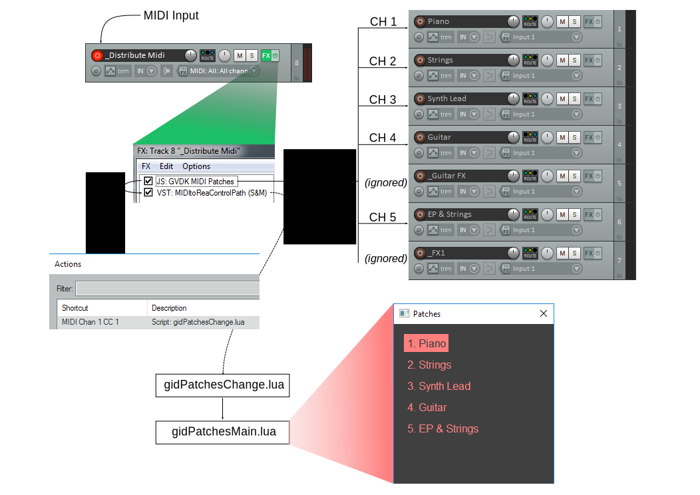

Overview
gidPatches allows you to instantly switch between patches for live playing using MIDI program messages. Reaper tracks represent patches (but tracks starting with an underscore are ignored). A JSFX plugin on a main MIDI distribute track routes MIDI to channels based on the current patch. The patch tracks are automatically detected by a GUI Lua script which also automatically creates sends from the main distribute track to the patch tracks using the appropriate MIDI channels.
The JSFX which does the MIDI routing ensures seamless patch switching. When notes, sustain pedal or pitchbend are held during a patch change, it is held until the user releases it. This ensures there are no sudden note-offs when changing patches and no stuck notes, sustain pedal or pitchbend.
Setup
- Create a track for each patch. Any tracks to be excluded from the patch list should start with an underscore.
- Create a track named "_Distribute Midi".
- Ensure "_Distrbute Midi" receives all the MIDI you want routed to the patches, as well as program changes that will switch patches. Also make sure monitoring is enabled (right-click on the track's record button) and that the track is armed for recording.
- Ensure "_Distribute Midi" also receives the Reaper virtual keyboard MIDI as this is used to send MIDI from the GUI script.
- Add the "GVDK MIDI Patches" JSFX effect to the "_Distribute Midi" effects chain. This script routes incomming MIDI to MIDI channels based on program changes received. It also emits a CC message when a patch is changed.
- Also add the "MIDItoReaControlPath" VST to the effects chain, after the previous effect. This will receive the CC messages when a patch is changed and eventually send it to our GUI.
- In the Reaper Actions editor, load the "gidPatchesMain.lua" and "gidPatchesChange.lua" scripts.
- Assign a shortcut to the "gidPatchesChange.lua" script. Send a program change to the "_Distribute Midi" track. The shortcut assignment dialog should detect a CC message with a value corresponding to a program change. Finalise the shortcut assignment.
- Run the "gidPatchesMain.lua" script. This opens a GUI. The GUI automatically detects the patch tracks and automatically removes all the sends of "_Distribute Midi", and creates new sends to all the patch tracks. Each send uses a different MIDI channel.
Below is an image that attempts to describe the working of gidPatches.
